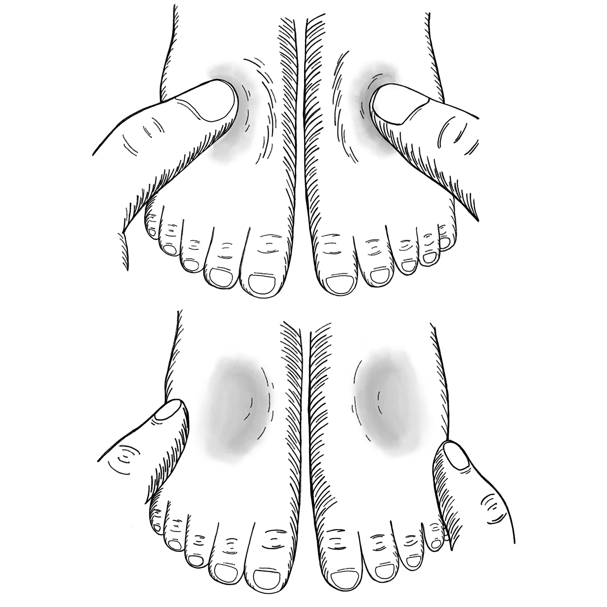

Mesure de l'œdème (rétention d'eau) chez les enfants
Qu’est-ce que l’œdème ?
L’œdème apparaît lorsqu’une quantité trop importante d’eau se concentre et stagne dans les tissus de l’organisme (rétention d’eau). L’œdème provoque des gonflements et des poches.
Pourquoi est-il important de mesurer l’œdème ?
Les gonflements ou l’œdème dans les deux pieds (œdème bilatéral) constituent un signe de malnutrition aiguë sévère. Cette forme de malnutrition est parfois appelée kwashiorkor.
Ce que vous devez savoir
L’œdème commence dans les pieds, mais il peut se propager à l’ensemble du corps. Plus le gon ement progresse (par exemple, en remontant vers les bras, les mains ou le visage), plus il est sérieux.
Plus l’œdème est repéré rapidement, plus il est facile à traiter.
Tous les enfants atteints d’œdème bilatéral doivent recevoir des soins thérapeutiques d’urgence.
Renseignez-vous sur l’emplacement des services de traitement de la malnutrition aiguë sévère les plus proches et sur les modalités pour y adresser les enfants.
Comment contrôler la présence d’œdème ?
Retirez les chaussures et chaussettes de l’enfant. Appuyez sur le dessus de chaque pied avec vos pouces pendant trois secondes. Gardez une pression ferme et constante.
Enlevez vos doigts. Si un trou ou un creux subsiste sur les deux pieds après trois secondes, il est possible que l’enfant soit atteint d’œdème.

Tout enfant diagnostiqué avec de l’œdème devrait être aiguillé au plus vite vers un établissement de santé.
L’œdème apparaît sur les pieds et, dans les cas graves, parfois sur les jambes et le visage.
L’enfant semble souvent triste ou malade et ne bouge pas beaucoup.
L’enfant est fatigué et n’a plus d’appétit.
La peau est souvent craquelée et présente des plaies.
Les cheveux sont secs, fins, cassants et d’une couleur rougeâtre.
L’enfant pleure beaucoup.
Ce que vous pouvez faire
Expliquer aux dirigeants communautaires et aux parents que le gon ement des pieds est un grave signe de malnutrition et qu’il peut être traité.
Expliquer l’importance de soigner la malnutrition.
Repérer les enfants atteints d’œdème nutritionnel et les orienter vers l’établissement de santé ou centre nutritionnel le plus proche aussi vite que possible.
Messages à la population
Apprenez le mot désignant, dans la langue locale, un enfant souffrant d’œdème, et utilisez-le pour vous aider à trouver ceux qui en sont atteints.
Expliquez à la communauté que l’œdème est un problème nutritionnel et peut être traité.
Mettez l’accent sur l’importance de se faire soigner et exposez les différentes causes de
malnutrition.
Soulignez le fait que les familles doivent être associées au traitement, à la prévention et à l’identification.
Messages communautaires
Voir les messages de la communauté suivants pour soutenir mesure de l'œdème (rétention d'eau) chez les enfants: